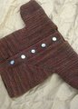
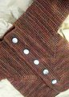

|
||
Premium Patterns Wintry Mix Mitts Love Bytes HawkeyeFree Patterns Kiddie Cadet Summerlin Ruffled Scarf Seamless DS Sock Simply Seamless Pouch Myriads of MushroomsExtras DIY Mitten Blocker Felt Patch Tutorial Yarn Dyeing Tutorial Needle Pouches Knitting Journal |
May 20, 2008 - Posted by Alice SchneblyGood ol' Garter StitchProject Specs There’s nothing like a little Elizabeth Zimmermann to get a knitter inspired! This jacket was such a fun little knit and the pattern held my attention all the way through—even though I don’t even have an intended recipient for this little sweater! I think this could be the first time I’ve ever knit something without anyone in mind. I’m excited to have a gift on hand for when I need a present for a little baby boy in the future. I think I’ll try to do this more often and keep a supply of baby gifts around to avoid the rush to get something knitted that always seems to happen around here! This was the first time I’ve worked with this yarn, or any of the Dream in Color yarns. The color variation throughout is stunning. At first I thought knitting up this jacket in just one color would be boring, but while I was knitting it I started to love how all the different browns were highlighted on the garter ridges. To me it almost looks like the bark of a tree. I really love it! Not being a sock knitter, this was probably not a yarn I would have picked up on my own, but I was lucky enough to win a contest on Kim’s blog by guessing closest to the number of skeins of sock yarn she acquired last month. She sent me this lovely skein of DIC along with two other gorgeous yarns, Araucania Ranco and Hill Country Yarns Sweet Feet. As you know even though I haven’t succumbed to sock knitting yet, I’ve always been taken by how gorgeous sock yarns are and I am always looking for great ways to use them. I have to say the BSJ has got to be one of the best ways to show them off! I used about 200 yards of Smooshy (less than half of the skein!) to make this sweater. I still have more than enough to make a pair of Saartjes booties and a hat to match. My gauge was 7.5 sts/inch, and I think I have a sweater that is pretty close to newborn size. It is absolutely darling! I keep picking it up and admiring how tiny it is. I really wish I would have known how to knit when Camdyn was born. A jacket like this would have been perfect for her to wear when we came home from the hospital on Christmas day—it was beautiful and sunny with just a light breeze; I was wearing a t-shirt! I still think I should knit Camdyn one for this Fall using a larger gauge and maybe adding a hood as well as length to the sleeves. As you can tell I’ve got my mojo back, and I’ve definitely got EZ on the mind. I think I could cast on for another BSJ at this very moment and I’d still be totally enthused with the pattern. I’ve moved a couple other EZ patterns up to the front of my queue—the February Baby Sweater and Norwegian Mittens—and hope to get to those in the near future. If you don’t have an EZ book yet, definitely get yourself one. At first you might be a bit intimidated by her writing style, but I’m sure you’ll grow to love it. I can wholeheartedly recommend The Opinionated Knitter. I love being able to read Elizabeth’s original newsletters next to her daughter, Meg Swansen’s, additional writings. The new issue of Interweave Knits also has a great article about the history of Schoolhouse Press that you also might find interesting. The article is followed by the Maltese Hat pattern (also in Knitter’s Almanac as well as Knitting Daily, for a limited time*) if you want to try out one of Elizabeth’s patterns and can’t get your hands on a book right away. *The Knitting Daily version is EZ’s pattern written out in Interweave Knits’ format. Though it overall might be easier to understand, I think it loses a bit of its original charm. |
   Recent ReviewsRecent Posts
 Our Favorites
|
| © 2007 KathrynIvy.com | ||
{kind=link}
{kind=link}